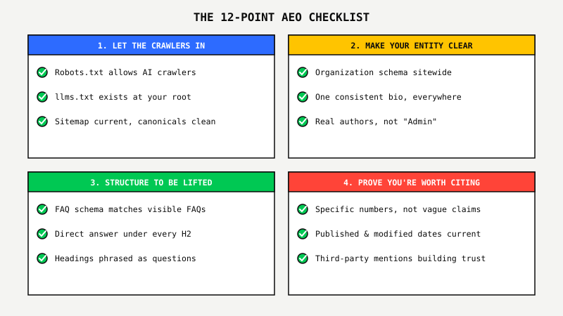
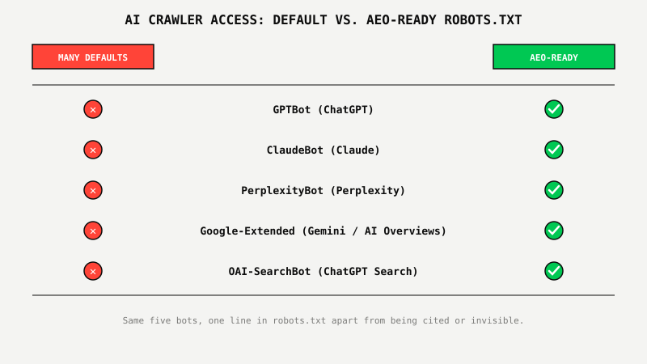

Your Website Doesn't Exist To ChatGPT Yet. Here's The 12-Point Fix.

Key Takeaways
- Getting cited by ChatGPT, Perplexity, and Google AI Overviews requires 12 checks across four categories: crawler access, entity clarity, content structure, and trust signals.
- None of the other 11 checks matter if your robots.txt is silently blocking GPTBot, ClaudeBot, PerplexityBot, Google-Extended, or OAI-SearchBot. Check that one first.
- An llms.txt file at your root gives models a plain-markdown map of your site instead of forcing them to infer structure from a crawl.
- AI systems weigh specific, verifiable facts over generic claims, and consensus across independent sources over a single confident page.
- Most of these checks take minutes each. The hard part isn't any single item, it's running all 12 consistently as your site changes.
Remember The Resume With No Job History?
Picture handing a hiring manager a resume that reads "experienced professional, great at what I do" with no company names, no dates, no results. No interviewer would take the risk of recommending that candidate, no matter how good they actually are. The information a decision-maker needs just isn't on the page.
That's what most business websites hand ChatGPT, Perplexity, and Google's AI Overviews every day. The business might be excellent. The proof might exist. But if a model can't crawl the page, can't tell who you are, can't find a self-contained answer, and can't verify you're trustworthy, it recommends someone else, the same way that hiring manager moves to the next resume.
The 12 checks below are the difference between a site an AI model can confidently cite and one it quietly skips.
The 12-Point AEO Checklist
The 12 checks split into four groups, and the groups build on each other in order. Access comes first because nothing else matters if the crawler never reaches the page. Entity and structure come next. Trust signals compound last, and slowest.

Group 1: Let The Crawlers In First
Before you touch a single word of content, confirm the bots doing the reading can actually get past your front door. Three checks control that.
1. Robots.txt Allows The AI Crawlers
Open your robots.txt and look for a blanket Disallow that blocks GPTBot, ClaudeBot, PerplexityBot, Google-Extended, or OAI-SearchBot, by name or by a wildcard rule written for "all bots except known search engines."
Plenty of WordPress and Squarespace defaults, and a fair number of security plugins, still ship that exact wildcard rule. It was written to stop scrapers, and it quietly stops every AI crawler that would otherwise cite you along with them.
2. An llms.txt File Exists At Your Root
llms.txt lives at yoursite.com/llms.txt and lists your key pages in plain markdown, so a model can read what your site actually is without inferring it from a full crawl. It isn't an official standard every model honors yet, but the models that do read it get an unambiguous map instead of a guess.
3. Your Sitemap Is Current And Your Canonicals Are Clean
An up-to-date XML sitemap, submitted to Search Console, with no conflicting canonical tags pointing two different URLs to the same content. A crawler that hits a confusing canonical signal often just skips the page rather than guess which version is authoritative.

Group 2: Make Your Entity Unmistakable
AI systems reason in entities, not keywords. Before a model cites you, it has to be confident it knows exactly who you are.
4. Organization Schema Is Present Sitewide
Name, logo, and sameAs links to your real social and directory profiles, present in the markup on every page, not just the homepage. This is how you tell a machine, in its own language, exactly who's speaking.
5. One Consistent Business Description, Everywhere
The same description, close to word for word, across your About page, homepage meta description, LinkedIn, Google Business Profile, and every directory listing. Inconsistent descriptions read to a model as either a different business or an unreliable source, neither of which gets cited.
6. Real Author Identity On Every Article
A named author with a real bio and credentials, marked up with Person schema, not a byline that says "Admin" or "Team." Models weigh named, credentialed authorship as a trust signal the same way a human reader does.
Group 3: Structure Content To Be Lifted
A technically perfect site still won't get cited if the content itself resists extraction. Three checks fix that.
7. FAQ Schema Matches A Real, Visible FAQ Section
FAQPage schema markup that mirrors an actual FAQ section on the page, word for word, not schema bolted on with no visible counterpart. Mismatched schema is either ignored or flagged as unreliable.
8. Every H2 Is Answered In The First Sentence Underneath
State the direct answer immediately under each heading, then elaborate. A paragraph that only makes sense after three paragraphs of buildup is a paragraph a model can't lift and cite on its own.
9. Headings Are Phrased As The Actual Questions People Ask
"What Google Ads management actually costs" gets matched against a real query. "Pricing Considerations" doesn't. Write headings the way your customer would type the question into ChatGPT, not the way a brochure would label a section.
Group 4: Prove You're Worth Citing
The last three checks decide which of two technically identical pages a model actually trusts enough to name.
10. Specific, Real Numbers Instead Of Vague Claims
"$6.43M in conversion value at 1,375% ROAS" gets cited. "Significant results for our clients" doesn't. Models weigh specific, verifiable facts over generic claims, the same way a skeptical reader does.
11. Published And Modified Dates Are Kept Current
Article schema with a datePublished and dateModified that's actually updated when the content changes, not frozen at the original publish date forever. Freshness is a real signal, and a page that visibly hasn't been touched in two years reads as a lower-confidence source.
12. Third-Party Mentions Build Consensus
Press mentions, directory listings, and reviews on other domains that describe your business consistently. AI systems weigh consensus across independent sources before citing any single one as the source of record. A single confident page saying something about itself is a weaker signal than three unrelated pages agreeing.
What Smart Businesses Do With This Checklist
Running these 12 checks once is a Saturday afternoon. Running them every time you publish a page, change a description, or your schema quietly breaks after a template update is a job nobody keeps up with manually, which is exactly why most sites drift out of compliance within a few months of getting it right the first time.
SEO Autopilot™ was built to run this checklist continuously instead of once. One SEO Autopilot™ client came in with broken citations and no local schema at all; after fixing citations, schema, and local signals on an ongoing basis, they now hold top-3 map placement for their money keywords, and the calls come in without anyone touching a dashboard. That's the difference between doing this list once and doing it as infrastructure.
Want Google and AI answer engines optimized at the same time, continuously?
See SEO Autopilot™ In Action ↗